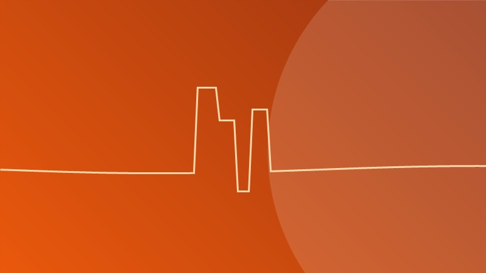

Hernia discal: síntomas, diagnóstico y tratamiento conservador

El dolor de espalda es una de las consultas más frecuentes en la práctica neuroquirúrgica. La hernia discal es una de sus causas más comunes, pero la buena noticia es que la mayoría de los casos se resuelven sin cirugía.
¿Qué es una hernia discal?
Entre las vértebras de la columna existen discos que actúan como amortiguadores. Cada disco tiene un anillo externo fibroso y un centro gelatinoso (núcleo pulposo). Cuando el anillo se debilita y el núcleo se desplaza, puede comprimir las raíces nerviosas o la médula espinal: eso es una hernia discal.
Síntomas más frecuentes
- Dolor lumbar o cervical según la zona afectada.
- Dolor irradiado: a lo largo del nervio comprimido. El más conocido es la ciática.
- Hormigueo o entumecimiento en extremidades.
- Debilidad muscular en el territorio del nervio afectado.
- En casos graves: alteraciones del control de esfínteres. Esto es una urgencia.
⚠️ Cuándo es una emergencia
El llamado "síndrome de cola de caballo" es una emergencia quirúrgica: pérdida de control de esfínteres, entumecimiento en la zona genital y debilidad progresiva de las piernas. Si presentas estos síntomas, acude de inmediato a urgencias.
Diagnóstico
El diagnóstico se realiza con la historia clínica, el examen neurológico y estudios de imagen como la resonancia magnética (RM), que permite ver con gran detalle los discos, nervios y médula.
Tratamiento conservador (primera línea)
En la mayoría de pacientes con hernia discal, la cirugía no es necesaria. Opciones conservadoras efectivas incluyen:
- Fisioterapia y ejercicios específicos de fortalecimiento.
- Analgésicos y antiinflamatorios (bajo supervisión médica).
- Relajantes musculares en fases agudas.
- Reposo relativo breve (no prolongado).
- Cambios de postura y ergonomía.
- Infiltraciones epidurales guiadas por imagen en casos seleccionados.
Con este manejo, la mayoría de pacientes mejoran en 4 a 6 semanas.
¿Cuándo considerar cirugía?
- Cuando existe déficit neurológico progresivo (debilidad que empeora).
- Cuando hay compresión medular.
- Ante el síndrome de cola de caballo (emergencia).
- Cuando el dolor es severo y no responde al tratamiento conservador tras varias semanas.
En esos casos, las técnicas quirúrgicas modernas y mínimamente invasivas ofrecen excelentes resultados.
Prevención
- Fortalece la musculatura del core (abdomen y espalda).
- Cuida tu postura al sentarte y levantar peso.
- Mantén un peso saludable.
- Evita el sedentarismo prolongado.